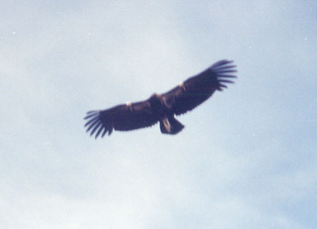
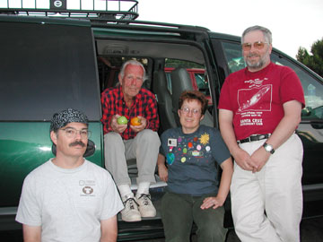

|  |
When we look at the constellation Cygnus, we are looking directly along the Orion Arm of the Milky Way as it spirals inwards toward the galactic center. The name Deneb means "tail" in Arabic and it is easy to see how this star forms the tail of Cygnus the swan. The blue and gold double star Albireo forms the head and the swan spreads its wings on either side of the Milky Way as Cygnus flies forever southward.
Close to Deneb is the shining gas cloud whose name needs no interpretation, the North America Nebula. You can see this extended patch of emission with the unaided eye from a very dark location. Its faint neighbor, the Pelican Nebula is actually a part of the same glowing nebula 100 million light-years across and 3,000 light-years distant. Together, this cloud is six times bigger than the Orion Nebula.
Traveling further along the spiral arm we come to a different kind of nebula, the Cygnus Loop, 2500 light-years from our sun. The Cygnus Loop, or the Veil Nebula as it is frequently called, is the remnant of a supernova which exploded about 20,000 years ago. The eastern segment is sometimes called the filamentary nebula, a riot of curvy wisps, strands and laces from the still-expanding stellar shock wave. The western segment is the more familiar piece, visible both north and south of the star 52 Cygni. It looks like a faint tattered lacy ribbon knotted by the star.The star is really in the forground and not a part of the nebula. The fainter north central piece of the remnant is known as Pickering's Triangle. No summer star party is complete without a sweep of the segments of the Veil Nebula, which are best seen with the aid of an O-III filter.
The great rift of the Milky Way begins near Deneb and extends SW deep into the southern Milky Way ending near Alpha Centauri. The dust clouds of the rift are probably 1,000 light-years distant in Cygnus, and approach us in Aquila, Scutum, Sagittarius and Scorpius, where they are only a few hundred light years away. The eagle Aquila is dusted with dark nebulae, ancient star cities, stellar outbursts and the faint puffs of exploded stars. Aquila is on the celestial equator and cuts through the great rift of the Milky Way where it runs NE - SW. Aquila is poor in clusters, rich in faint planetary nebulae, and loaded with dark nebulae.
Turning away from the the center of our galaxy, we see the trapezoidal shaped constellation, Corvus the Crow low in the southwest sky. From the big dipper handle, follow the arc to Arcturus, speed to Spica then curve to Corvus. Within the constellation boundary lies R Corvi at the western vertex of a triangle with two 7th magnitude stars. A mira-type variable, it fluctuates from magnitude of 6 to 14 over a period of 317 days. Delta Corvi is a brilliant white primary and faint pale lilac secondary double star. Struve 1669 is a beautiful pair of yellow stars in a sparsely scattered star field, only 1.5 degrees south of M104 the Sombrero Galaxy in Virgo. Most observers have bumped into this pretty double on their way to the Sombrero.
The most interesting galaxy in Corvus is the Ring Tail Galaxy, NGC4038 and NGC4039. The two components can be visually discerned in a large telescope, and through smaller instruments, varies in appearance from an irregular glow to a comma shaped crescent. The northern galaxy, 4038 is bigger and brighter, a crescent with a dark patch in the middle. The southern galaxy, 4039 is connected at its SE edge to its companion. NGC4361, right in the middle of Corvus near the star R Corvi is a little gray planetary nebula. My first observation of this little gem marked the completion of the Herschel 400 two years ago and so it is a favorite of mine.
The Crow soon disappeared beyond the horizon. Taking its place in the Arizona sky was our most endangered bird. The California Condor was near extinction twenty years ago. The population now stands at 156, with 25 flying free in Arizona and 34 in California. It soars on the warm thermal currents to 4572 meters (15,000 feet) searching for carrion. Adults are black except for white underwing linings. The head and neck are mostly naked, turning pink/orange at maturity. Males and females cannot be distinguished by size or plumage characteristics.
|  |
Soaring hundreds of feet above the canyon rim one hot June afternoon were several California Condors. Perched on a rocky outcrop, heating their bodies and feathers in the sun were five more of their brethren, some alighting as we watched. Ten more soared nearby, the biologist reported. "Eighteen of the twenty-three free-flying condors are flying near the south rim today", she told us breathlessly.
I added this observation to my lifetime observing list, and continued on my afternoon walk. That evening, I revisited the celestial birds with my telescope, and recalled the memory of the soaring condor flying free over the high desert landscape.
[Another story and complete photo album is available at http://www.sfsidewalkastronomers.org/.]